Exploratory Spatial and Temporal Data Analysis (ESTDA)
import matplotlib
import numpy as np
import pysal as ps
import matplotlib.pyplot as plt
%matplotlib inline
f = ps.open(ps.examples.get_path('usjoin.csv'), 'r')
To determine what is in the file, check the header attribute on the file object:
f.header[0:10]
['Name',
'STATE_FIPS',
'1929',
'1930',
'1931',
'1932',
'1933',
'1934',
'1935',
'1936']
Ok, lets pull in the name variable to see what we have.
name = f.by_col('Name')
name
['Alabama',
'Arizona',
'Arkansas',
'California',
'Colorado',
'Connecticut',
'Delaware',
'Florida',
'Georgia',
'Idaho',
'Illinois',
'Indiana',
'Iowa',
'Kansas',
'Kentucky',
'Louisiana',
'Maine',
'Maryland',
'Massachusetts',
'Michigan',
'Minnesota',
'Mississippi',
'Missouri',
'Montana',
'Nebraska',
'Nevada',
'New Hampshire',
'New Jersey',
'New Mexico',
'New York',
'North Carolina',
'North Dakota',
'Ohio',
'Oklahoma',
'Oregon',
'Pennsylvania',
'Rhode Island',
'South Carolina',
'South Dakota',
'Tennessee',
'Texas',
'Utah',
'Vermont',
'Virginia',
'Washington',
'West Virginia',
'Wisconsin',
'Wyoming']
Now obtain per capital incomes in 1929 which is in the column associated with 1929.
y1929 = f.by_col('1929')
y1929[:10]
[323, 600, 310, 991, 634, 1024, 1032, 518, 347, 507]
And now 2009
y2009 = f.by_col("2009")
y2009[:10]
[32274, 32077, 31493, 40902, 40093, 52736, 40135, 36565, 33086, 30987]
These are read into regular Python lists which are not particularly well suited to efficient data analysis. So let's convert them to numpy arrays.
y2009 = np.array(y2009)
y2009
array([32274, 32077, 31493, 40902, 40093, 52736, 40135, 36565, 33086,
30987, 40933, 33174, 35983, 37036, 31250, 35151, 35268, 47159,
49590, 34280, 40920, 29318, 35106, 32699, 37057, 38009, 41882,
48123, 32197, 46844, 33564, 38672, 35018, 33708, 35210, 38827,
41283, 30835, 36499, 33512, 35674, 30107, 36752, 43211, 40619,
31843, 35676, 42504])
Much better. But pulling these in and converting them a column at a time is tedious and error prone. So we will do all of this in a list comprehension.
Y = np.array( [ f.by_col(str(year)) for year in range(1929,2010) ] ) * 1.0
Y.shape
(81, 48)
Y = Y.transpose()
Y.shape
(48, 81)
years = np.arange(1929,2010)
plt.plot(years,Y[0])
[<matplotlib.lines.Line2D at 0x110ba1a58>]
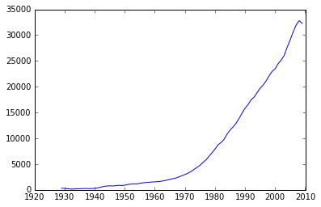
RY = Y / Y.mean(axis=0)
plt.plot(years,RY[0])
[<matplotlib.lines.Line2D at 0x113575e10>]
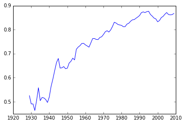
name = np.array(name)
np.nonzero(name=='Ohio')
(array([32]),)
plt.plot(years, RY[32], label='Ohio')
plt.plot(years, RY[0], label='Alabama')
plt.legend()
<matplotlib.legend.Legend at 0x1137d9eb8>
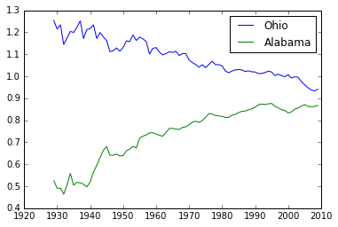
Spaghetti Plot
for row in RY:
plt.plot(years, row)
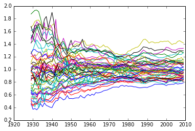
Kernel Density (univariate, aspatial)
from scipy.stats.kde import gaussian_kde
density = gaussian_kde(Y[:,0])
Y[:,0]
array([ 323., 600., 310., 991., 634., 1024., 1032., 518.,
347., 507., 948., 607., 581., 532., 393., 414.,
601., 768., 906., 790., 599., 286., 621., 592.,
596., 868., 686., 918., 410., 1152., 332., 382.,
771., 455., 668., 772., 874., 271., 426., 378.,
479., 551., 634., 434., 741., 460., 673., 675.])
density = gaussian_kde(Y[:,0])
minY0 = Y[:,0].min()*.90
maxY0 = Y[:,0].max()*1.10
x = np.linspace(minY0, maxY0, 100)
plt.plot(x,density(x))
[<matplotlib.lines.Line2D at 0x113d2a748>]
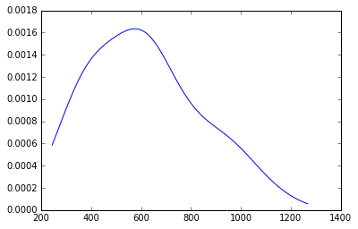
d2009 = gaussian_kde(Y[:,-1])
minY0 = Y[:,-1].min()*.90
maxY0 = Y[:,-1].max()*1.10
x = np.linspace(minY0, maxY0, 100)
plt.plot(x,d2009(x))
[<matplotlib.lines.Line2D at 0x113a48358>]
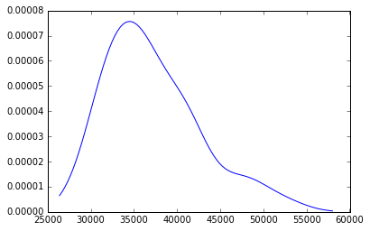
minR0 = RY.min()
maxR0 = RY.max()
x = np.linspace(minR0, maxR0, 100)
d1929 = gaussian_kde(RY[:,0])
d2009 = gaussian_kde(RY[:,-1])
plt.plot(x, d1929(x))
plt.plot(x, d2009(x))
[<matplotlib.lines.Line2D at 0x113d035c0>]
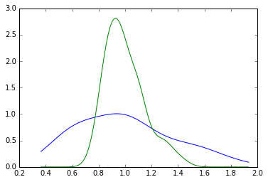
plt.plot(x, d1929(x), label='1929')
plt.plot(x, d2009(x), label='2009')
plt.legend()
<matplotlib.legend.Legend at 0x113a4a908>
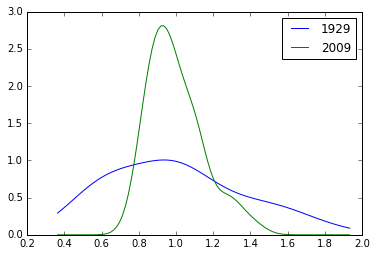
import seaborn as sns
for y in range(2010-1929):
sns.kdeplot(RY[:,y])
#sns.kdeplot(data.HR80)
#sns.kdeplot(data.HR70)
#sns.kdeplot(data.HR60)
/Users/dani/anaconda/envs/gds-scipy16/lib/python3.5/site-packages/statsmodels/nonparametric/kdetools.py:20: VisibleDeprecationWarning: using a non-integer number instead of an integer will result in an error in the future
y = X[:m/2+1] + np.r_[0,X[m/2+1:],0]*1j
import seaborn as sns
for y in range(2010-1929):
sns.kdeplot(RY[:,y])
/Users/dani/anaconda/envs/gds-scipy16/lib/python3.5/site-packages/statsmodels/nonparametric/kdetools.py:20: VisibleDeprecationWarning: using a non-integer number instead of an integer will result in an error in the future
y = X[:m/2+1] + np.r_[0,X[m/2+1:],0]*1j
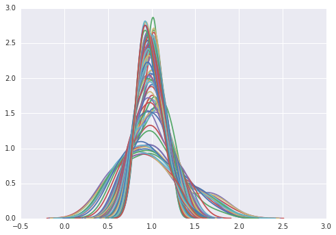
for cs in RY.T: # take cross sections
plt.plot(x, gaussian_kde(cs)(x))
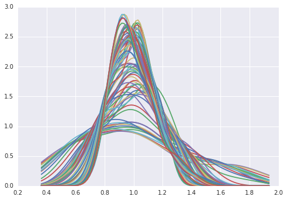
cs[0]
0.86746356478544273
sigma = RY.std(axis=0)
plt.plot(years, sigma)
plt.ylabel('s')
plt.xlabel('year')
plt.title("Sigma-Convergence")
<matplotlib.text.Text at 0x11439c470>

So the distribution is becoming less dispersed over time.
But what about internal mixing? Do poor (rich) states remain poor (rich), or is there movement within the distribuiton over time?
Markov Chains
c = np.array([
['b','a','c'],
['c','c','a'],
['c','b','c'],
['a','a','b'],
['a','b','c']])
c
array([['b', 'a', 'c'],
['c', 'c', 'a'],
['c', 'b', 'c'],
['a', 'a', 'b'],
['a', 'b', 'c']],
dtype='<U1')
m = ps.Markov(c)
m.classes
array(['a', 'b', 'c'],
dtype='<U1')
m.transitions
array([[ 1., 2., 1.],
[ 1., 0., 2.],
[ 1., 1., 1.]])
m.p
matrix([[ 0.25 , 0.5 , 0.25 ],
[ 0.33333333, 0. , 0.66666667],
[ 0.33333333, 0.33333333, 0.33333333]])
State Per Capita Incomes
ps.examples.explain('us_income')
{'description': 'Per-capita income for the lower 47 US states 1929-2010',
'explanation': [' * us48.shp: shapefile ',
' * us48.dbf: dbf for shapefile',
' * us48.shx: index for shapefile',
' * usjoin.csv: attribute data (comma delimited file)'],
'name': 'us_income'}
data = ps.pdio.read_files(ps.examples.get_path("us48.dbf"))
W = ps.queen_from_shapefile(ps.examples.get_path("us48.shp"))
W.transform = 'r'
data.STATE_NAME
0 Washington
1 Montana
2 Maine
3 North Dakota
4 South Dakota
5 Wyoming
6 Wisconsin
7 Idaho
8 Vermont
9 Minnesota
10 Oregon
11 New Hampshire
12 Iowa
13 Massachusetts
14 Nebraska
15 New York
16 Pennsylvania
17 Connecticut
18 Rhode Island
19 New Jersey
20 Indiana
21 Nevada
22 Utah
23 California
24 Ohio
25 Illinois
26 Delaware
27 West Virginia
28 Maryland
29 Colorado
30 Kentucky
31 Kansas
32 Virginia
33 Missouri
34 Arizona
35 Oklahoma
36 North Carolina
37 Tennessee
38 Texas
39 New Mexico
40 Alabama
41 Mississippi
42 Georgia
43 South Carolina
44 Arkansas
45 Louisiana
46 Florida
47 Michigan
Name: STATE_NAME, dtype: object
f = ps.open(ps.examples.get_path("usjoin.csv"))
pci = np.array([f.by_col[str(y)] for y in range(1929,2010)])
pci.shape
(81, 48)
pci = pci.T
pci.shape
(48, 81)
cnames = f.by_col('Name')
cnames[:10]
['Alabama',
'Arizona',
'Arkansas',
'California',
'Colorado',
'Connecticut',
'Delaware',
'Florida',
'Georgia',
'Idaho']
ids = [ cnames.index(name) for name in data.STATE_NAME]
ids[:10]
[44, 23, 16, 31, 38, 47, 46, 9, 42, 20]
pci = pci[ids]
RY = RY[ids]
import matplotlib.pyplot as plt
import geopandas as gpd
shp_link = ps.examples.get_path('us48.shp')
tx = gpd.read_file(shp_link)
pci29 = ps.Quantiles(pci[:,0], k=5)
f, ax = plt.subplots(1, figsize=(10, 5))
tx.assign(cl=pci29.yb+1).plot(column='cl', categorical=True, \
k=5, cmap='Greens', linewidth=0.1, ax=ax, \
edgecolor='grey', legend=True)
ax.set_axis_off()
plt.title('Per Capita Income 1929 Quintiles')
plt.show()
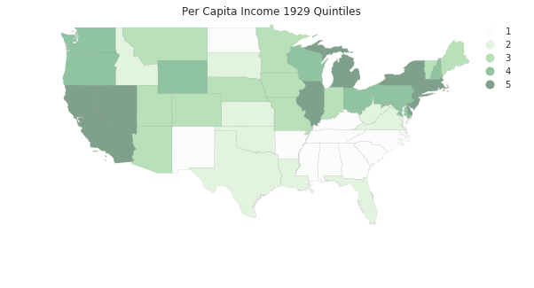
pci2009 = ps.Quantiles(pci[:,-1], k=5)
f, ax = plt.subplots(1, figsize=(10, 5))
tx.assign(cl=pci2009.yb+1).plot(column='cl', categorical=True, \
k=5, cmap='Greens', linewidth=0.1, ax=ax, \
edgecolor='grey', legend=True)
ax.set_axis_off()
plt.title('Per Capita Income 2009 Quintiles')
plt.show()
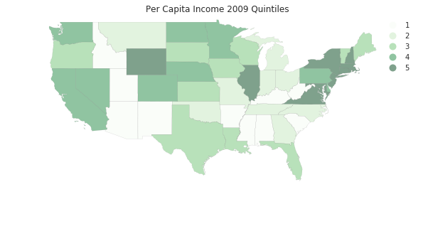
convert to a code cell to generate a time series of the maps
for y in range(2010-1929): pciy = ps.Quantiles(pci[:,y], k=5) f, ax = plt.subplots(1, figsize=(10, 5)) tx.assign(cl=pciy.yb+1).plot(column='cl', categorical=True, \ k=5, cmap='Greens', linewidth=0.1, ax=ax, \ edgecolor='grey', legend=True) ax.set_axis_off() plt.title("Per Capita Income %d Quintiles"%(1929+y)) plt.show()
Put series into cross-sectional quintiles (i.e., quintiles for each year).
q5 = np.array([ps.Quantiles(y).yb for y in pci.T]).transpose()
q5.shape
(48, 81)
q5[:,0]
array([3, 2, 2, 0, 1, 3, 3, 1, 2, 2, 3, 3, 2, 4, 2, 4, 3, 4, 4, 4, 2, 4, 2,
4, 3, 4, 4, 1, 3, 2, 0, 1, 1, 2, 2, 1, 0, 0, 1, 0, 0, 0, 0, 0, 0, 1,
1, 4])
pci.shape
(48, 81)
pci[0]
array([ 741, 658, 534, 402, 376, 443, 490, 569, 599,
582, 614, 658, 864, 1196, 1469, 1527, 1419, 1401,
1504, 1624, 1595, 1721, 1874, 1973, 2066, 2077, 2116,
2172, 2262, 2281, 2380, 2436, 2535, 2680, 2735, 2858,
3078, 3385, 3566, 3850, 4097, 4205, 4381, 4731, 5312,
5919, 6533, 7181, 7832, 8887, 9965, 10913, 11903, 12431,
13124, 14021, 14738, 15522, 16300, 17270, 18670, 20026, 20901,
21917, 22414, 23119, 23878, 25287, 26817, 28632, 30392, 31528,
32053, 32206, 32934, 34984, 35738, 38477, 40782, 41588, 40619])
we are looping over the rows of y which is ordered $T \times n$ (rows are cross sections, row 0 is the cross-section for period 0.
m5 = ps.Markov(q5)
m5.classes
array([0, 1, 2, 3, 4])
m5.transitions
array([[ 729., 71., 1., 0., 0.],
[ 72., 567., 80., 3., 0.],
[ 0., 81., 631., 86., 2.],
[ 0., 3., 86., 573., 56.],
[ 0., 0., 1., 57., 741.]])
np.set_printoptions(3, suppress=True)
m5.p
matrix([[ 0.91 , 0.089, 0.001, 0. , 0. ],
[ 0.1 , 0.785, 0.111, 0.004, 0. ],
[ 0. , 0.101, 0.789, 0.107, 0.003],
[ 0. , 0.004, 0.12 , 0.798, 0.078],
[ 0. , 0. , 0.001, 0.071, 0.927]])
m5.steady_state #steady state distribution
matrix([[ 0.208],
[ 0.187],
[ 0.207],
[ 0.188],
[ 0.209]])
fmpt = ps.ergodic.fmpt(m5.p) #first mean passage time
fmpt
matrix([[ 4.814, 11.503, 29.609, 53.386, 103.598],
[ 42.048, 5.34 , 18.745, 42.5 , 92.713],
[ 69.258, 27.211, 4.821, 25.272, 75.433],
[ 84.907, 42.859, 17.181, 5.313, 51.61 ],
[ 98.413, 56.365, 30.66 , 14.212, 4.776]])
For a state with income in the first quintile, it takes on average 11.5 years for it to first enter the second quintile, 29.6 to get to the third quintile, 53.4 years to enter the fourth, and 103.6 years to reach the richest quintile.
But, this approach assumes the movement of a state in the income distribution is independent of the movement of its neighbors or the position of the neighbors in the distribution. Does spatial context matter?
Dynamics of Spatial Dependence
Create a queen contiguity matrix that is row standardized
w = ps.queen_from_shapefile(ps.examples.get_path('us48.shp'))
w.transform = 'R'
mits = [ps.Moran(cs, w) for cs in RY.T]
res = np.array([(m.I, m.EI, m.p_sim, m.z_sim) for m in mits])
plt.plot(years, res[:,0], label='I')
plt.plot(years, res[:,1], label='E[I]')
plt.title("Moran's I")
plt.legend()
<matplotlib.legend.Legend at 0x7f912bf8d438>
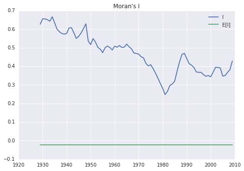
plt.plot(years, res[:,-1])
plt.ylim(0,7.0)
plt.title('z-values, I')
<matplotlib.text.Text at 0x7f912beb4da0>
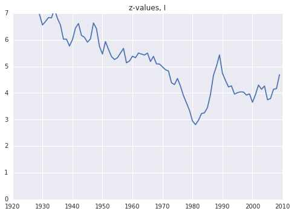
Spatial Markov
pci.shape
(48, 81)
rpci = pci / pci.mean(axis=0)
rpci[:,0]
array([ 1.204, 0.962, 0.977, 0.621, 0.692, 1.097, 1.094, 0.824,
1.031, 0.974, 1.086, 1.115, 0.944, 1.473, 0.969, 1.873,
1.255, 1.664, 1.421, 1.492, 0.987, 1.411, 0.896, 1.611,
1.253, 1.541, 1.677, 0.748, 1.248, 1.031, 0.639, 0.865,
0.705, 1.009, 0.975, 0.74 , 0.54 , 0.614, 0.779, 0.666,
0.525, 0.465, 0.564, 0.441, 0.504, 0.673, 0.842, 1.284])
rpci[:,0].mean()
0.99999999999999989
sm = ps.Spatial_Markov(rpci, W, fixed=True, k=5)
sm.p
matrix([[ 0.915, 0.075, 0.009, 0.001, 0. ],
[ 0.066, 0.827, 0.105, 0.001, 0.001],
[ 0.005, 0.103, 0.794, 0.095, 0.003],
[ 0. , 0.009, 0.094, 0.849, 0.048],
[ 0. , 0. , 0. , 0.062, 0.938]])
for p in sm.P:
print(p)
[[ 0.963 0.03 0.006 0. 0. ]
[ 0.06 0.832 0.107 0. 0. ]
[ 0. 0.14 0.74 0.12 0. ]
[ 0. 0.036 0.321 0.571 0.071]
[ 0. 0. 0. 0.167 0.833]]
[[ 0.798 0.168 0.034 0. 0. ]
[ 0.075 0.882 0.042 0. 0. ]
[ 0.005 0.07 0.866 0.059 0. ]
[ 0. 0. 0.064 0.902 0.034]
[ 0. 0. 0. 0.194 0.806]]
[[ 0.847 0.153 0. 0. 0. ]
[ 0.081 0.789 0.129 0. 0. ]
[ 0.005 0.098 0.793 0.098 0.005]
[ 0. 0. 0.094 0.871 0.035]
[ 0. 0. 0. 0.102 0.898]]
[[ 0.885 0.098 0. 0.016 0. ]
[ 0.039 0.814 0.14 0. 0.008]
[ 0.005 0.094 0.777 0.119 0.005]
[ 0. 0.023 0.129 0.754 0.094]
[ 0. 0. 0. 0.097 0.903]]
[[ 0.333 0.667 0. 0. 0. ]
[ 0.048 0.774 0.161 0.016 0. ]
[ 0.011 0.161 0.747 0.08 0. ]
[ 0. 0.01 0.062 0.896 0.031]
[ 0. 0. 0. 0.024 0.976]]
sm.S
array([[ 0.435, 0.264, 0.204, 0.068, 0.029],
[ 0.134, 0.34 , 0.252, 0.233, 0.041],
[ 0.121, 0.211, 0.264, 0.29 , 0.114],
[ 0.078, 0.197, 0.254, 0.225, 0.247],
[ 0.018, 0.2 , 0.19 , 0.255, 0.337]])
for f in sm.F:
print(f)
[[ 2.298 28.956 46.143 80.81 279.429]
[ 33.865 3.795 22.571 57.238 255.857]
[ 43.602 9.737 4.911 34.667 233.286]
[ 46.629 12.763 6.257 14.616 198.619]
[ 52.629 18.763 12.257 6. 34.103]]
[[ 7.468 9.706 25.768 74.531 194.234]
[ 27.767 2.942 24.971 73.735 193.438]
[ 53.575 28.484 3.976 48.763 168.467]
[ 72.036 46.946 18.462 4.284 119.703]
[ 77.179 52.089 23.604 5.143 24.276]]
[[ 8.248 6.533 18.388 40.709 112.767]
[ 47.35 4.731 11.854 34.175 106.234]
[ 69.423 24.767 3.795 22.321 94.38 ]
[ 83.723 39.067 14.3 3.447 76.367]
[ 93.523 48.867 24.1 9.8 8.793]]
[[ 12.88 13.348 19.834 28.473 55.824]
[ 99.461 5.064 10.545 23.051 49.689]
[ 117.768 23.037 3.944 15.084 43.579]
[ 127.898 32.439 14.569 4.448 31.631]
[ 138.248 42.789 24.919 10.35 4.056]]
[[ 56.282 1.5 10.572 27.022 110.543]
[ 82.922 5.009 9.072 25.522 109.043]
[ 97.177 19.531 5.26 21.424 104.946]
[ 127.141 48.741 33.296 3.918 83.522]
[ 169.641 91.241 75.796 42.5 2.965]]
sm.summary()
--------------------------------------------------------------
Spatial Markov Test
--------------------------------------------------------------
Number of classes: 5
Number of transitions: 3840
Number of regimes: 5
Regime names: LAG0, LAG1, LAG2, LAG3, LAG4
--------------------------------------------------------------
Test LR Chi-2
Stat. 170.659 200.624
DOF 60 60
p-value 0.000 0.000
--------------------------------------------------------------
P(H0) C0 C1 C2 C3 C4
C0 0.915 0.075 0.009 0.001 0.000
C1 0.066 0.827 0.105 0.001 0.001
C2 0.005 0.103 0.794 0.095 0.003
C3 0.000 0.009 0.094 0.849 0.048
C4 0.000 0.000 0.000 0.062 0.938
--------------------------------------------------------------
P(LAG0) C0 C1 C2 C3 C4
C0 0.963 0.030 0.006 0.000 0.000
C1 0.060 0.832 0.107 0.000 0.000
C2 0.000 0.140 0.740 0.120 0.000
C3 0.000 0.036 0.321 0.571 0.071
C4 0.000 0.000 0.000 0.167 0.833
--------------------------------------------------------------
P(LAG1) C0 C1 C2 C3 C4
C0 0.798 0.168 0.034 0.000 0.000
C1 0.075 0.882 0.042 0.000 0.000
C2 0.005 0.070 0.866 0.059 0.000
C3 0.000 0.000 0.064 0.902 0.034
C4 0.000 0.000 0.000 0.194 0.806
--------------------------------------------------------------
P(LAG2) C0 C1 C2 C3 C4
C0 0.847 0.153 0.000 0.000 0.000
C1 0.081 0.789 0.129 0.000 0.000
C2 0.005 0.098 0.793 0.098 0.005
C3 0.000 0.000 0.094 0.871 0.035
C4 0.000 0.000 0.000 0.102 0.898
--------------------------------------------------------------
P(LAG3) C0 C1 C2 C3 C4
C0 0.885 0.098 0.000 0.016 0.000
C1 0.039 0.814 0.140 0.000 0.008
C2 0.005 0.094 0.777 0.119 0.005
C3 0.000 0.023 0.129 0.754 0.094
C4 0.000 0.000 0.000 0.097 0.903
--------------------------------------------------------------
P(LAG4) C0 C1 C2 C3 C4
C0 0.333 0.667 0.000 0.000 0.000
C1 0.048 0.774 0.161 0.016 0.000
C2 0.011 0.161 0.747 0.080 0.000
C3 0.000 0.010 0.062 0.896 0.031
C4 0.000 0.000 0.000 0.024 0.976
--------------------------------------------------------------